Live responseA real dispatcher, day or night
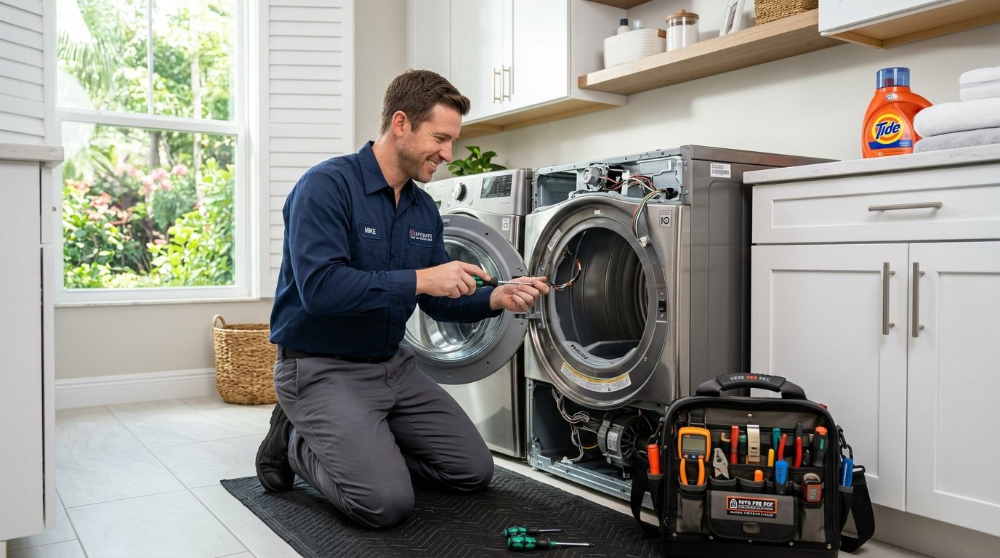
Your local team, ready to respond
Dryer Repair Sarasota FL
Fast Same-Day Local Service
Expert dryer repair in Sarasota, FL. Same-day diagnostic appointments, certified local technicians, and upfront transparent pricing for electric and gas dryers across Sarasota County.
- 24/7 live dispatch
- Residential & commercial
- Options before work
✓
Current responseCrews routing now
Start here
What Dryer Problem Can We Solve Today?
No obligation. A local dispatcher confirms the next available window.
Call Dispatch: 941 123 4567
Crews Routing Throughout Sarasota Now
Licensed teamQualified, insured technicians
Clear optionsScope and price before work
Clean finishProtect, repair, test, tidy
Work backedWritten workmanship promise
Certified Brand Expertise
Major Dryer Brands We Service with Genuine OEM Parts
Our mobile service vans carry factory-approved parts to diagnose and repair all major household and commercial dryer brands on the first visit.
Whirlpool Dryer Repair
Same-day service for Whirlpool Cabrio, Duet, and traditional top-load gas and electric dryers across Sarasota.
Samsung Dryer Repair
Accurate troubleshooting for Samsung error codes (tE, dE, 4C), heating elements, and smart sensor moisture boards.
LG Smart Dryer Repair
Expert repairs for LG TrueSteam, Sensor Dry, and inverter motor units that stop spinning or fail to heat.
GE & GE Profile Repair
Comprehensive service for General Electric and GE Profile dryers, including start switches, thermostats, and belts.
Maytag Commercial Tech
Heavy-duty drum roller, drive belt, and blower wheel replacements for Maytag Bravos and commercial-grade units.
Kenmore, Bosch & Electrolux
Full repair support for Speed Queen, Frigidaire, Amana, KitchenAid, and compact ventless condensing dryers.
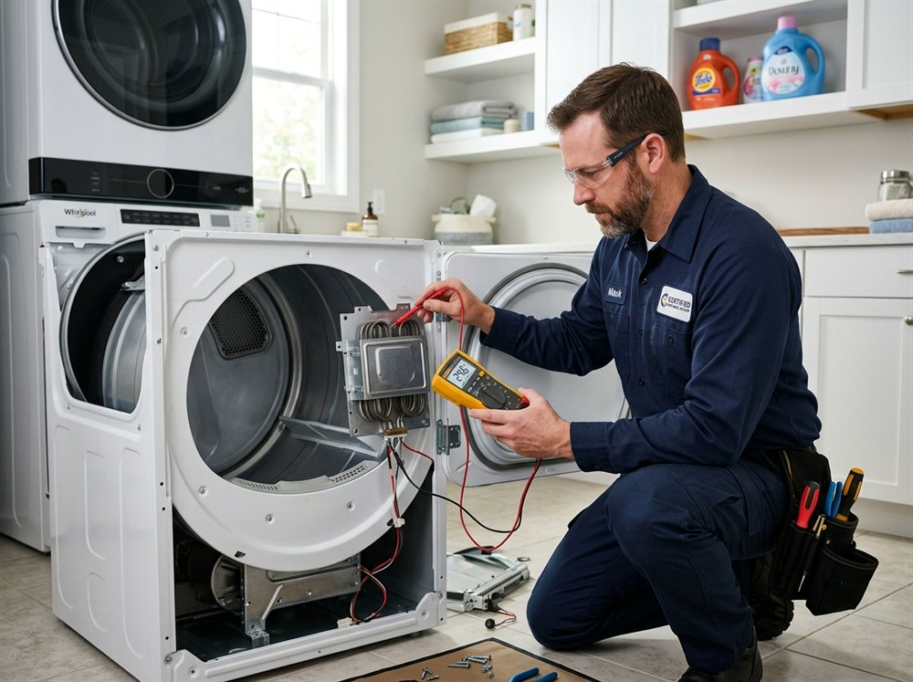
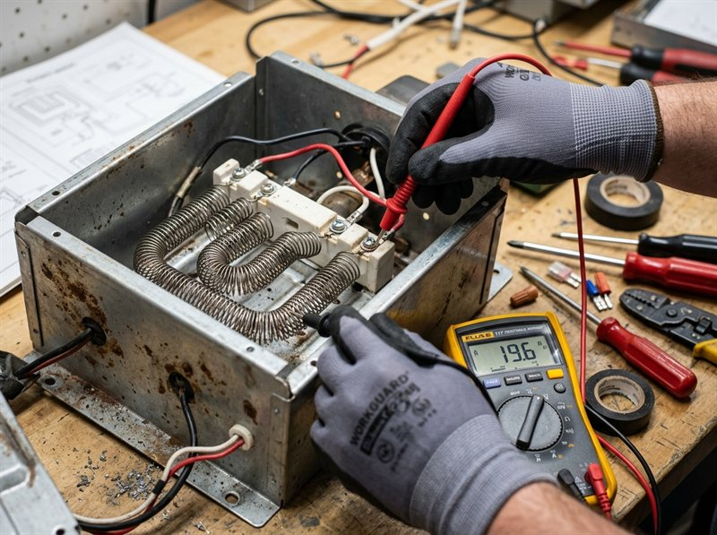
The local standard
Trusted Local Dryer Repair Specialists in Sarasota, FL
Dryer Repair Sarasota FL is a dedicated service that addresses all dryer-related issues for residents in Sarasota and surrounding areas. We focus on quick, reliable repairs to get your appliance back in working order.
Our team is NATE certified and licensed to provide superior service. We offer same-day appointments and are familiar with neighborhoods like Palmer Ranch and Gulf Gate Estates, ensuring quick response times for Dryer Repair Sarasota.
Complete service support
Professional Dryer Repair Services We Provide
Our specialized dryer repair services in Sarasota cover both electric and gas models. We carry mobile inventory for fast same-day diagnostics and repairs.
01!Urgent response
Dryer Not Heating Repair
If your dryer is not heating, our team can quickly diagnose and fix the problem. This service is essential for efficient laundry days in Sarasota, ensuring your clothes dry properly.
Explore Dryer Not Heating Repair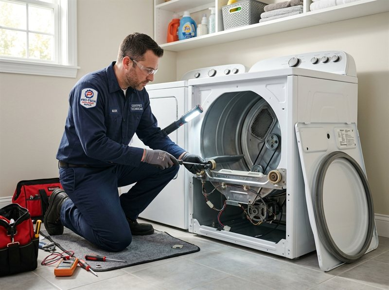
02↯Restore flow
Electric Dryer Repair
Our electric dryer repair service addresses common issues like malfunctioning thermostats and broken heating elements. We serve the Sarasota area, providing prompt and effective solutions.
Explore Electric Dryer Repair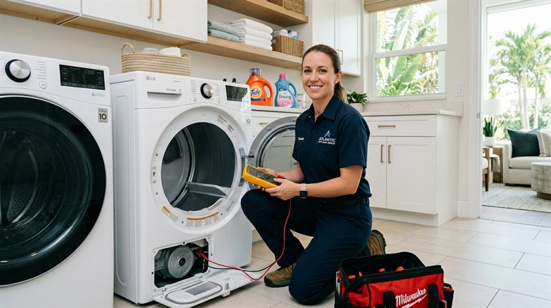
03♨Reliable service
Dryer Belt Replacement
A worn-out dryer belt can prevent your appliance from functioning. We offer dryer belt replacement services in Sarasota, ensuring your dryer operates smoothly again.
Explore Dryer Belt Replacement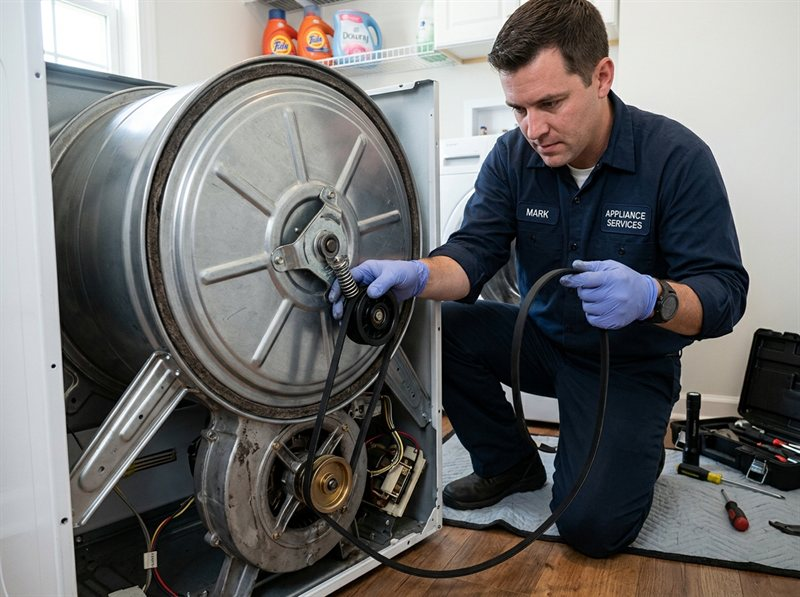
04⚑Trusted repairs
Dryer Not Starting Repair
If your dryer won't start, we can help. Our technicians diagnose and repair issues quickly, providing peace of mind for homeowners in Sarasota.
Explore Dryer Not Starting Repair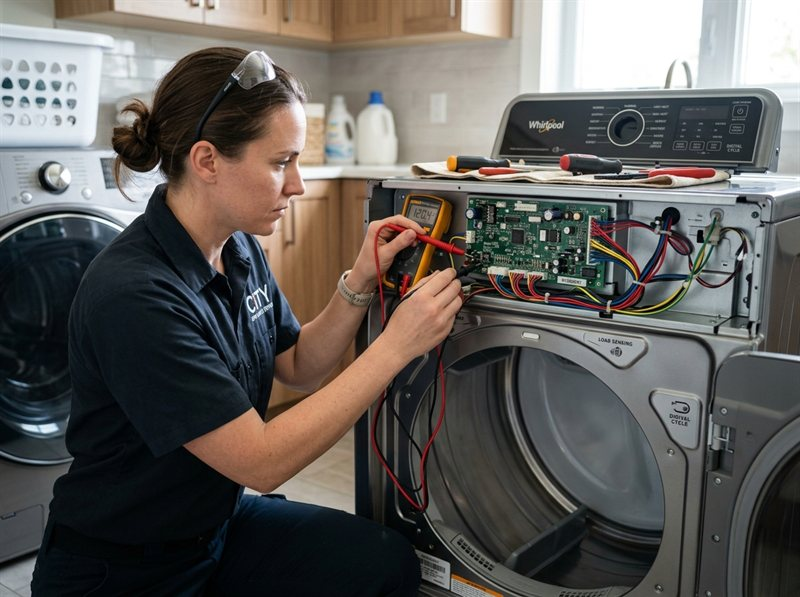
05!Urgent response
Gas Dryer Repair
Our gas dryer repair services cover everything from ignition issues to gas line repairs. We ensure your appliance operates safely and efficiently in Sarasota.
Explore Gas Dryer Repair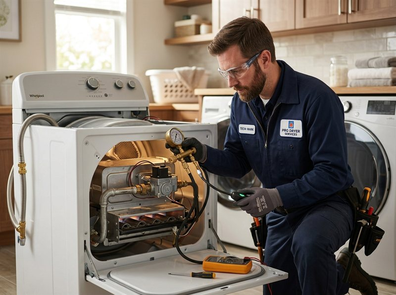
Not sure which category fits? Tell us what you see, hear, or smell and we'll route the right technician.
Describe the problemWhy homeowners choose us
Why Sarasota Homeowners Choose Our Dryer Specialists
We stand out for our commitment to quality and customer satisfaction. Our technicians are trained to handle various dryer issues, ensuring reliable service.

4.9Average local rating across hundreds of customer reviews
From call to all clear
Our 4-Step Professional Dryer Repair Process
You always know what happens next, what needs your approval, and how we confirm the repair worked.
Step 1: Rapid Scheduling & Dispatch
We begin with a quick phone assessment to understand your dryer symptoms and dispatch a local Sarasota crew.
Step 2: Diagnostic Assessment & Testing
Our technicians arrive on time with precision diagnostic gear to pinpoint the exact failure cause.
Step 3: Precision Repair with OEM Parts
With your approval, we replace worn components using factory-original parts backed by written warranty.
Step 4: Safety Check, Heat Test & Cleanup
After repairs, we run full heat and airflow cycle tests to ensure optimal performance and leave your laundry room spotless.
Built around the property
Residential Care & Commercial Dryer Coordination
The principles stay the same, but access, scheduling, documentation, and load change with the property.
Residential service
Practical repairs for occupied homes, rentals, condos, and HOA-managed properties.
- Flexible windows around family schedules
- Floor and work-area protection
- Repair versus replacement guidance
- Documentation for owners and property managers
Commercial service
Response plans for restaurants, retail, offices, multifamily buildings, and light industrial sites.
- Priority scheduling and after-hours coordination
- Phased work to limit business interruption
- Site contacts, access notes, and photo records
- Preventive and multi-location service plans
Expert Buying vs Repair Guidance
Repair or Replace? How to Decide for Your Sarasota Home
A clothes dryer is one of the most mechanically straightforward appliances in your home. Here is our honest rule of thumb to help you make the most cost-effective decision.
✓
When Repairing Your Dryer Is the Smarter Investment
If your dryer is under 10 years old and the drum and cabinet are structurally sound, replacing an electric heating coil, drive belt, thermal cutoff, or door latch costs a fraction of buying a new dryer ($600–$1,400+).
%
The 50% Rule: Repair Cost vs New Dryer Replacement
As a general rule, if a repair quote exceeds 50% of the replacement price of an older machine (12+ years old) that has multiple failing components, replacement may make more sense. Our technicians always provide upfront estimates first.
★
Average Dryer Lifespan in Florida's Climate
In Florida's humid climate, dryers typically last 10 to 14 years when exhaust ducts are kept clear. Regular lint removal prevents airflow restriction, reduces motor strain, and prevents premature thermal fuse failure.
Start with what you notice
Common Dryer Problems We Diagnose & Repair in Sarasota
We effectively address the full range of dryer malfunctions to restore quiet, dependable drying performance.
Dryer Not Heating or Blowing Cold Air
Our team quickly diagnoses burnt heating elements, blown thermal fuses, and faulty cycling thermostats to restore full heat.
Dryer Drum Not Spinning, Turning, or Tumbling
We replace snapped drive belts, seized idler pulleys, and worn drum rollers to restore smooth, quiet tumbling.
Dryer Making Squeaking, Grinding, or Thumping Noises
We inspect worn rear drum bearings, damaged blower wheels, and glide strips to eliminate squeaks before motor damage occurs.
Dryer Not Starting or Tripping Breakers
We troubleshoot door latch switches, push-to-start switches, thermal cutoffs, and digital control boards to restore power.
Full residential appliance diagnostics
Beyond Dryers: Complete Sarasota Kitchen & Laundry Repair Suite
While clothes dryers are our primary specialty, our EPA-certified technicians provide comprehensive troubleshooting, accurate problem diagnosis, and genuine OEM parts for your entire Sarasota home.
Dryer Repair & Vent Diagnostics
Our flagship specialty. From heating coils, thermal fuses, and belt replacements to squeak elimination, gas igniters, and full vent airflow clearing.
Call Dispatch: 941 123 4567Refrigerator & Freezer Repair
Precision temperature troubleshooting, condenser fan replacement, sealed system diagnostics, defrost thermostat repairs, and compressor servicing in Sarasota.
Call Dispatch: 941 123 4567Dishwasher Repair & Leak Repair
Fast issue resolution for standing water, wash motor failures, drain pump clogs, door gasket seal leaks, float switches, and spray arm pressure imbalances.
Call Dispatch: 941 123 4567Ice Maker Repair & Water Valves
Restoring clear, steady ice production. We replace failed solenoid water inlet valves, optical bin sensors, internal drive gears, and clear frozen water fill tubes.
Call Dispatch: 941 123 4567Electronic Control Board Repair
Advanced digital diagnostics for modern smart appliances. Relay replacement, power surge testing, wiring harness repairs, and motherboard module reprogramming.
Call Dispatch: 941 123 4567Microwave & Wine Cooler Repair
Inverter magnetron testing, door interlock safety switches, and dual-zone precision cooling repairs for luxury wine coolers and residential microwaves.
Call Dispatch: 941 123 4567Customer Review Topics & Verified Service Highlights
Extracted from 180+ verified local Sarasota homeowner reviews
★ Knowledgeable Staff 109
⏱ Punctuality & On Time 84
🔍 Problem Diagnosis 78
Dryer Repair 55
Courteous & Friendly Staff 49
💲 Fair Pricing & No Upselling 42
Dishwasher Repair 41
Refrigerator Repair 34
Quick Repair & Resolution 29
Ice Maker Repair 19
Easy Scheduling 6
Microwave Repair 5
Thorough Work Quality 4
OEM Part Ordering 3
Repair Control Board 2
Leak Repair 2
Wine Cooler Repair 2
Real local feedback
What Our Sarasota Customers Say
★★★★★
“Knowledgeable staff and excellent punctuality! Arrived right on time in Sarasota, performed an accurate problem diagnosis on our dryer and refrigerator, and gave fair pricing with no upselling. Quick repair and work quality were outstanding.”
★★★★★
“The technician was polite, courteous, and very knowledgeable. He handled our ice maker repair and dryer belt quickly, completing a thorough repair. Easy scheduling over the phone!”
★★★★★
“Fast issue resolution for our dishwasher repair and leak repair issue. Pleasant staff, on time arrival, and fair pricing. Highly recommended for accurate diagnosis and part ordering.”
Google Maps Verified Landmark Directory
Sarasota Landmarks & Attractions We Serve
Verified service coverage across Sarasota's world-renowned cultural, historic, aviation, and coastal landmarks documented in Sarasota, Florida history. Distances, live routes, and estimated drive times mapped directly from our central primary facility at 3856 Yellowstone Cir, Sarasota, FL 34233.
Upfront Diagnostic Pricing • Zero Hidden Travel Fees Across Any Sarasota Neighborhood • 90-Day Parts & Labor Guarantee
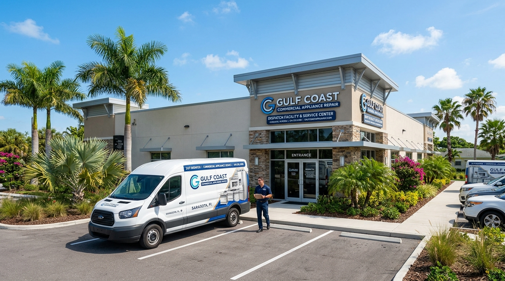
Central Operations HQ Active HeadquartersCentral Dispatch Base & Parts Depot
3856 Yellowstone Cir, Sarasota, FL 34233
Our primary dispatch headquarters and inventory depot. Mobile service vans deploy from this central 34233 location daily with factory-certified belts, thermal fuses, and heating elements stocked for same-day service.
Primary Operations Center
0.0 mi (Origin)
Immediate Routing
Central 34233 Hub
Immediate Dispatch Zones from Central Base:
Cultural Landmark
Fast Dispatch
The John & Mable Ringling Museum of Art
5401 Bay Shore Rd, Sarasota, FL 34243
Historic 66-acre estate celebrating the Ringling family circus legacy and European masterworks. Serving nearby North Sarasota residences and bayfront properties with prompt mobile service.
From 3856 Yellowstone Cir (34233)
10.5 mi
~20-22 min
via US-41 N
Communities in this Landmark Zone:
Historic Mansion
Fast Dispatch
Ca' d'Zan & Circus Museum
5401 Bay Shore Rd, Sarasota, FL 34243
The 1926 Venetian Gothic waterfront mansion of John & Mable Ringling. Cemented Sarasota's identity as the winter headquarters of the circus and gave the city its "Circus City" nickname.
From 3856 Yellowstone Cir (34233)
10.6 mi
~20-24 min
via US-41 N
Communities in this Landmark Zone:
Historic Theater
Fast Dispatch
Sarasota Opera House
61 N Pineapple Ave, Sarasota, FL 34236
World-renowned acoustic institution housed in an elegantly restored 1926 historic theater. Specialists in compact, stacked, and ventless dryer repairs for surrounding downtown condos.
From 3856 Yellowstone Cir (34233)
6.2 mi
~14-16 min
via Bahia Vista St
Communities in this Landmark Zone:
Coastal Beach
Fast Dispatch
Siesta Beach & Coastline
948 Beach Rd, Siesta Key, FL 34242
World-famous barrier island coast acclaimed for pure quartz crystal white sands. Dedicated priority dryer service for Siesta Key beachfront rentals, villas, and resort properties.
From 3856 Yellowstone Cir (34233)
6.8 mi
~15-18 min
via Stickney Pt Rd
Communities in this Landmark Zone:
Coastal Estuary
Fast Dispatch
Sarasota Bay Marine System
Bayfront Park, 5 Bayfront Dr, Sarasota, FL 34236
Scenic coastal lagoon connecting Sarasota's mainland waterfront with barrier islands. Prompt service for waterfront estates, marinas, and private canal homes facing high humidity.
From 3856 Yellowstone Cir (34233)
6.5 mi
~14-17 min
via Ringling Blvd
Communities in this Landmark Zone:
Coastal Waters
Fast Dispatch
Gulf of Mexico Shoreline
Lido Beach, 400 Benjamin Franklin Dr, Sarasota, FL 34236
Warm turquoise waters bordering Sarasota's barrier keys, defining local climate and sea breezes. Specialized dryer repairs for coastal properties resisting humidity and salt air.
From 3856 Yellowstone Cir (34233)
8.8 mi
~18-22 min
via John Ringling Pkwy
Communities in this Landmark Zone:
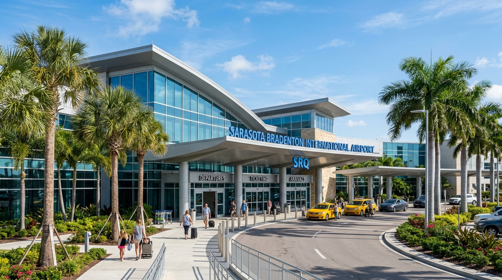
Aviation Hub · SRQ Fast DispatchSarasota–Bradenton Int'l Airport (SRQ)
6000 Airport Cir, Sarasota, FL 34243
Regional aviation gateway connecting Sarasota to global travelers; official meteorological station and origin of Sarasota's famous "SRQ" nickname. Full coverage across nearby neighborhoods.
From 3856 Yellowstone Cir (34233)
10.4 mi
~20-24 min
via US-301 N
Communities in this Landmark Zone:
Marine Waterway
Fast Dispatch
Gulf Intracoastal Waterway
Gulf Intracoastal Waterway, Sarasota, FL 34236
System of natural deep water sections, channels, and canals linking the entire Sarasota Bay system. Mobile service for residential boating communities and coastal canal estates.
From 3856 Yellowstone Cir (34233)
5.5 mi
~12-15 min
via Siesta Dr / US-41
Communities in this Landmark Zone:
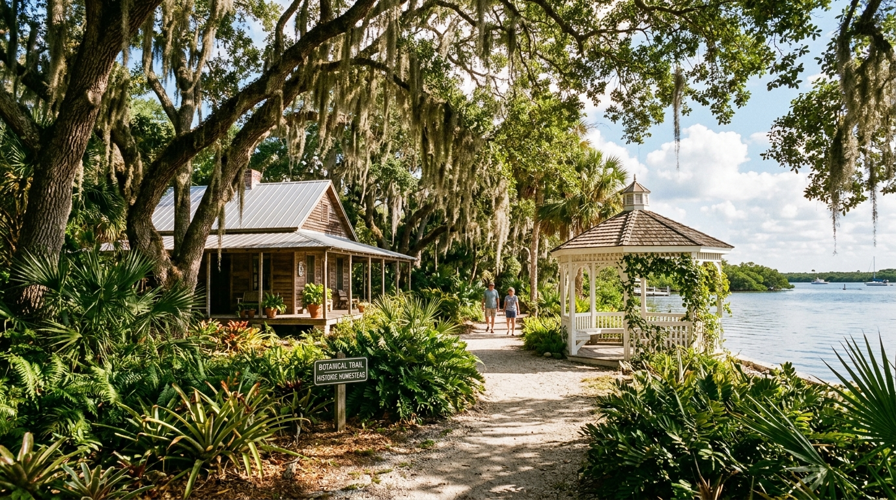
Historic Landmark Fast DispatchHistoric Spanish Point (Bertha Palmer Estate)
401 N Tamiami Trail, Osprey, FL 34229
30-acre bayfront museum & archaeological site commemorating Bertha Honoré Palmer's development of Sarasota. Dependable repair service across Palmer Ranch and south county homes.
From 3856 Yellowstone Cir (34233)
6.9 mi
~14-18 min
via S Tamiami Trail
Communities in this Landmark Zone:
Bayfront Park
Fast Dispatch
The Bay Park & Sarasota Bayfront
655 N Tamiami Trail, Sarasota, FL 34236
A 53-acre signature public park revitalizing Sarasota's bayfront with boardwalks and kayak launches. Same-day service for adjacent downtown residential towers and condo units.
From 3856 Yellowstone Cir (34233)
7.2 mi
~16-19 min
via Tamiami Trail
Communities in this Landmark Zone:
Performing Arts
Fast Dispatch
Van Wezel Performing Arts Hall
777 N Tamiami Trail, Sarasota, FL 34236
The iconic waterfront purple seashell hall designed by Frank Lloyd Wright's Taliesin Fellowship. Convenient, same-day dryer repair routes serve residences throughout the cultural corridor.
From 3856 Yellowstone Cir (34233)
7.4 mi
~16-20 min
via US-41 N
Communities in this Landmark Zone:
Botanical Sanctuary
Fast Dispatch
Marie Selby Botanical Gardens
1534 Mound St, Sarasota, FL 34236
A 15-acre bayfront botanical sanctuary world-renowned for orchids and historic banyans. Serving nearby historic homes from Southside Village to Hudson Bayou with white-glove care.
From 3856 Yellowstone Cir (34233)
5.8 mi
~12-15 min
via Mound St / US-41
Communities in this Landmark Zone:
County-wide coverage
Serving All Greater Sarasota Landmarks & Coastal Communities
Don't see your specific location listed above? Our mobile service vehicles carry full diagnostic equipment and factory-certified replacement parts throughout Sarasota and surrounding areas. Call our dispatch center to verify same-day service at your address.
Call Dispatch 941 123 4567 →
1234
Primary dispatch base: 3856 Yellowstone Cir, Sarasota, FL 34233. Serving Sarasota and nearby areas with prompt, same-day mobile dispatch.
How every visit runs
Prepared for the Repair Behind the Repair
One standard, whatever the job turns out to be — from the first call to the final test.
Prepared arrival
The right equipment is on the truck before we reach your door — matched to the symptom you reported.
Diagnosis first
We confirm the real cause before any tool goes in — so you fix the problem, not the symptom.
Contained work
Floor protection, a tidy work area, and a careful cleanup on every visit.
Tested & documented
The result is re-tested and reviewed with you, with clear notes on what comes next.
Questions before we arrive
Frequently Asked Questions About Dryer Repair in Sarasota, FL

Still unsure? A dispatcher can help identify the safest immediate step and the right appointment type.
Ask dispatch nowHow much does dryer repair cost in Sarasota, FL?
Most dryer repair jobs in Sarasota, FL, range from $129 to $299, depending on the issue and parts required (such as thermal fuses, belts, or heating elements). We provide upfront diagnostic pricing before any repair begins.
Do you offer same-day dryer repair in Sarasota?
Yes, we prioritize same-day service for Sarasota homeowners and property managers. Our mobile dispatch units cover all Sarasota neighborhoods with common replacement parts in stock.
Why is my dryer running but producing no heat at all?
A dryer that tumbles without heat is usually caused by a burnt heating element, a blown thermal cutoff fuse, a cycling thermostat malfunction, or (on gas units) a failed igniter or gas solenoid valve.
Is it worth repairing a 7- to 10-year-old dryer or replacing it?
If the drum and cabinet are in good condition and the repair estimate is under 50% of the replacement price, repairing is far more economical and extends the dryer's life by another 4 to 7 years.
Do you repair both gas and electric dryers?
Yes, our certified technicians are fully trained and equipped to service both electric dryers (240V) and natural gas/propane dryers, including gas safety inspections.
What dryer brands do you service?
We service all major brands including Whirlpool, Samsung, LG, GE, Maytag, Kenmore, Bosch, Electrolux, Speed Queen, Frigidaire, KitchenAid, and Amana using genuine OEM parts.
A problem does not improve with waiting
Need Fast Dryer Repair in Sarasota? Schedule Same-Day Service
Contact us for fast and reliable dryer repair services. Our team is ready to help you get your appliance running smoothly again.

Talk with the local team
Schedule Your Sarasota Dryer Repair Appointment
We're here to help! Reach out to us for any dryer repair needs. Our team is available during business hours to assist you.
Instant Phone Dispatch
Call Directly for Immediate Service
No waiting for email replies or form submissions. Speak directly with our local Sarasota dispatch team to confirm technician availability and same-day arrival times.
- Same-Day Arrival: Vans stocked with common dryer parts
- Upfront Quotes: Clear diagnostic estimates before work
- All Brands Serviced: Electric & gas dryer certified
- Local Dispatch: Originating from 3856 Yellowstone Cir